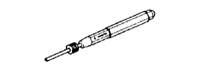

AUTOMATIC TRANSMISSION ASSEMBLY > COMPONENTS > Preparation

| Angle gauge | - |
| Calipers | - |
| Cylinder gauge | - |
| Dial indicator | - |
| Feeler gauge | - |
| Micrometer | - |
| OBD II scan tool | - |
| Straightedge | - |
| Torque wrench | - |
| V-block | - |
| Vernier caliper | - |
| Automatic transmission fluid: Dry fill | 11.1 liters (11.7 US qts, 9.8 Imp. qts) | Toyota Genuine ATF WS |
| Automatic transmission fluid: Drain and refill | 3.0 liters (3.2 US qts, 2.6 Imp. qts) | |
| Toyota Genuine Clutch Spline Grease or equivalent | - | |
 | 09017-1C130 | Union Nut Wrench 17mm | - |
|  | 09031-00030 | Pin Punch | - |
 | 09082-00040 | TOYOTA Electrical Tester | - |
| Toyota Genuine Seal Packing 1281, Three Bond 1281 or equivalent | - |
| Toyota Genuine Adhesive 1324, Three Bond 1324 or equivalent | - |